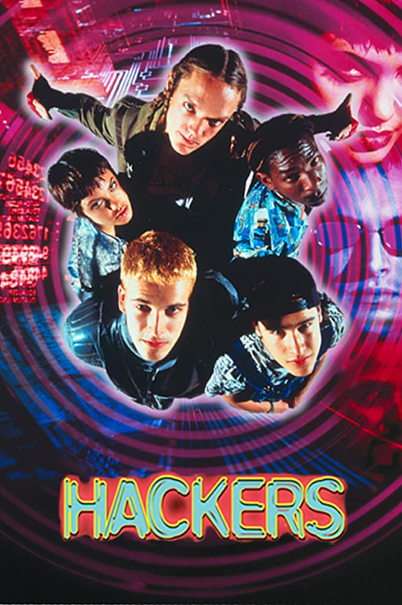

Interest In IT
My Interests in IT
My Interest in IT started when I was 10 years old (in 1991). The Internet was still new, and my dad bought me a 286 from Myer with a 13K modem. I was discovering the Internet and was using an operating system called OS2/Warp which was developed by IBM. I got up to all sorts of mischief, I was interested in hacking and would learn about phreaking phones and how to use Trojan's to gain access to peoples computers.
 I would spend hours on mIRC and send Trojans to people and hack into their PC's and open their CD trays and do silly things. I was totally obsessed with hardware and software and lived right through the evolution of MP3's and the anti virius, CD burning and torrents.
I remember the movie Hackers in the 90's, I was obsessed with this movie and I still love it for its nostalgic value
Since then I have had a knack for all things technology and even now, I am heavily technically invested in IT. It is my full time career, and I absolutely love it.
My IT Experience
My IT experience started when I was in year 10, I decided I wanted to work in IT for life. I enrolled in a VCAT course which specialised in visual arts/animation and multimedia. This was the time of Flash and DirectX, where streaming content had still not yet taken off. I graduated with my certificate IV in arts, but it was hard to land a job. I ended up working on an IT help desk at the NAB for many years and eventually got into automated testing. I was self taught but had a lot of passion and excelled. During this time I was taken under the wing of a senior developer who taught me everything about C and how to code properly. His name was Nick and I owe my career to him as I was really scared of writing code till that point.
Why did I chose RMIT
I didn't really chose RMIT, RMIT chose me. I was actually doing a degree (BITS) at Monash university when life took over. I had some kids and we had a death in the family and I had to put my study on hold. When I came back, Monash no longer offered the course and I had to come to RMIT. I'm glad I did as the RMIT system is so much better than the Monash one. The on-line learning is amazing and I've had a really good time collaborating with students who are in the same boat as me. I don't really need my degree as I have 20 years IT experience however, I want to show my kids that you can still graduate from Uni, no matter how old you are, and studying is a good thing. You are never too old to learn.
What do you expect to learn during your studies?
To be totally honest, I'm not sure. I've had such a vast exposure to the IT industry over the last 20 years and have worked for several multinational organisations on multi-million dollar programs of work. I've seen almost everything there is to see in the delivery area of IT which is huge. I guess a lot of the things that I'm seeing during my studies is textbook methods on how things should be done, but this is far from what happens in large organisations which can be pretty amusing. In saying all of this, I'm still learning a lot of things that I have found useful in my day to day job.